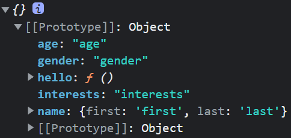
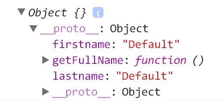
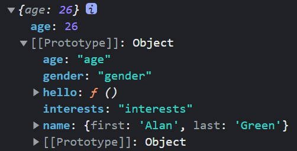

ES6的Class
把前面的範例透過Class方法重新編寫：
1 | class Person { |
為了示範ES6的Class可以直接將方法加入建構子的prototype內，所以在constructor的後方加入Hello()，並且印出Person.prototype驗證。
類別一旦宣告完成，可以任意將之實例化。另外，類別也可以被繼承（Extend），子類別會預設繼承父類別的方法和屬性—當然，也可以在子類別上重新設定繼承來的方法與屬性。
1 | class Student extends Person { |
非常方便的語法糖，當然背後仍然是依靠物件原型及原型鏈。
原型鏈的效能及一些問題深入探討
Q1：為什麼建構函式裡要用this.prop，this指向哪裡？
為什麼在Person裡使用this會是幫實例加上屬性呢？
其實正常來說函式中的this在指向的應該會是全域環境的window（在瀏覽器上執行），所以直接執行Person的話，會是window被設定屬性。
1 | function Person(first, last, age, gender, interests) { |
所以關鍵是new，以下模擬new做的事情：
- 建立新物件：建立一個新物件，起初這個物件的
__proto__指向的會是Object.prototype - 重新指向原型：重新將
__proto__指向建構函式的原型，使物件成為建構函式的實例 - 初始化物件：執行建構函式，但利用
apply將this指定給實例，這樣才能為它新增屬性 - 回傳新物件：最後回傳這個處理完成的實例
new背後做的事情不是很複雜但卻很重要，它將實例以及原型之間建立了連結。
Q2：箭頭函式可以作建構函式嗎？
答案是不行。
- 箭頭函式沒有
[[construct]]這個內部方法，所以箭頭函式本身不能被用作建構函式。 - 箭頭函式本身沒有
this，箭頭函式的this會指向程式碼外層的詞法作用域（lexical scoping），所以依照Q1說明的，new關鍵字的其中步驟是將函式中的this指定給實例，既然箭頭函式本身沒有this當然就無法被new呼叫。
1 | let Person = (name, age) => { |
- 箭頭函式沒有原型，由於不可以通過new關鍵字呼叫箭頭函式，因此沒有構建原型的需求，所以箭頭函式不存在prototype這個屬性。
1 | let foo = () => {}; |
補充說明：不可以通過call、apply、bind改變箭頭函式的
this指向，箭頭函式的內部this值在定義時已經確定了，在函式的生命週期內始終保持一致。
1 | var a = 10; |
Q3：原型繼承：new與Object.create()
原型繼承的方法前面new介紹過了，接下來要講解Object.create()，首先看使用範例：
1 | const Person = { |
首先看這段程式碼會印出什麼：
1 | const Alan = Object.create(Person) |
輸出的結果如下，它是一個空物件，但是它繼承了Person這個物件當中的屬性和方法，並存在[[prototype]]內：

[[]]雙括號代表物件的「內部屬性」（見ECMAScript 8.6.2），這類符號不是一個能在程式編寫使用的屬性。它只是提供資訊用。而在devtool可以看到這些資訊，例如Chrome console的[[prototype]]。但是Firefox表示方法是：<prototype>。
[[prototype]]是所有物件內部都有的特殊屬性，提供內部插槽（internal slot）供物件存放prototype的屬性或方法。__proto__則是一個getter/setter，用來存取[[prototype]]內部插槽的值。
註：內部插槽（internal slot）是用來表示物件內部狀態，並被各種ECMAScript規範算法所使用。重要的是，內部插槽不是物件屬性，也不能被繼承。
註：其實看到一些較舊的文章，會發現以前Chrome console顯示的是__proto__，這跟上面提到的__proto__是不同的東西，這是[[prototype]]的前身，且已被取代。

接著看後面的程式碼：
1 | Alan.age = 26 |

由於原型鏈，可以在這個物件中建立相同屬性的內容，在執行的時候它會先找物件最外層的屬性，於是就不會得到default的結果。所以，對於age來說，這物件已經有這個屬性，它就不會往物件的原型去尋找，而對hello來說，因為Alan物件裡沒有這個方法，於是會到[[prototype]]裡面去找。另外要說一下，first和last雖然有定義，但是與Alan.name = { first: 'Alan', last: 'Green' }不同，並沒有在Alan物件中產生新的屬性，而是更改了[[prototype]]內部值，所以first和last一樣要到[[prototype]]內去找。Alan.hello()印出來就會是Hello, Alan Green! You are 26 years old!
所以透過Object.create()的方法，是最單純使用原型繼承的方法。只需先建立一個A物件，再建立另一個B物件並用Object.create()指向A物件當做它的原型，並賦予屬性及方法。
Alan與Person的原型鏈關係又是如何？
1 | console.log(Alan.__proto__ === Person) //true |
Q4：直接修改prototype影響效能？
基於現代Javascript引擎最佳化物件屬性存取的方法，改變一個物件的
[[Prototype]]在任何瀏覽器或是Javascript引擎都是非常慢的操作。改變繼承屬性對效能的影響微妙且深遠，不僅僅只是影響執行obj.__proto__ = ...的時間，而是會影響到所有有存取到被改變[[Prototype]]的物件的程式碼的執行時間。如果你在乎效能的話就應該避免改變一個物件的[[Prototype]]。反之，請用 Object.create() 來產生一個擁有[[Prototype]]的物件。 — MDN
結語
這篇文章是我找了很多參考資料，包含Stack Overflow的很多問答而寫的集大成。了解原型可以幫助了解JavaScript的運作模式，尤其是在寫ES6的Class語法糖的時候，裡面的constructor是什麼意思，用extends的意思，都可以比較了解了。（雖然目前class componment目前正在被社群逐漸淘汰中，都改用function conponent取代）
參考資料：
- 從ES6開始的JavaScript學習生活 - 原型基礎物件導向
- 你懂 JavaScript 嗎？#19 原型（Prototype）
- 15. [JS] 什麼是原型鏈？
- JavaScript原型系列（一）構造函數、原型和原型鏈
- Javascript继承机制的设计思想
- 你懂 JavaScript 嗎？#19 原型（Prototype）
- [筆記] 了解JavaScript中原型(prototype)、原型鍊（prototype chain）和繼承(inheritance)的概念
- 面試官最愛考的 JS 原型鏈
- JS基本觀念: 原型鏈(prototype chain)
- javascript之作用域與this指向